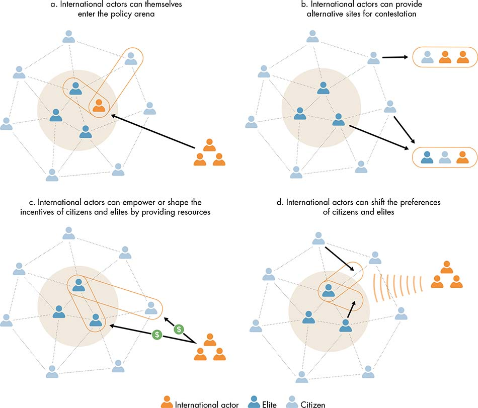
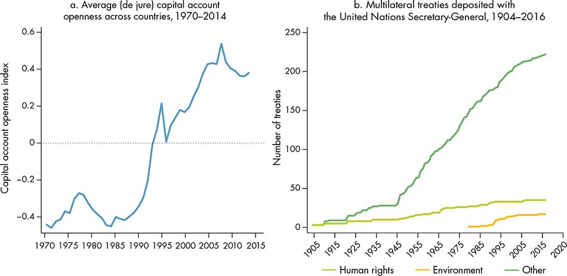
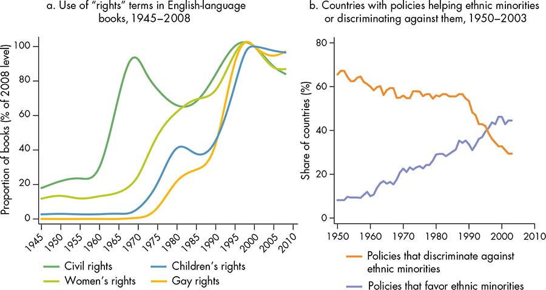
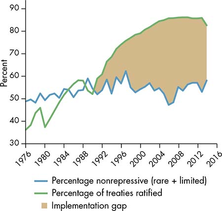
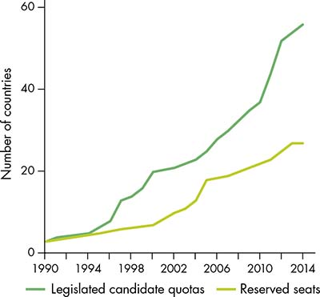
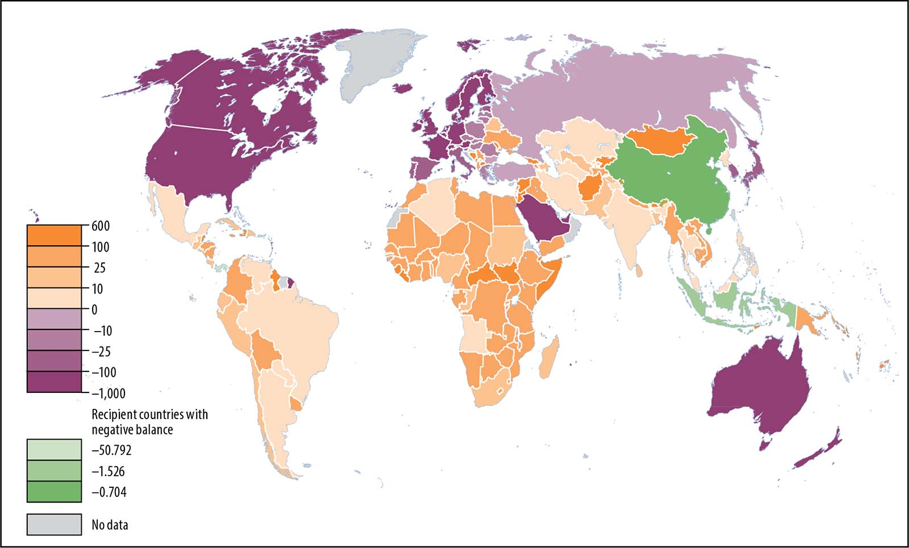
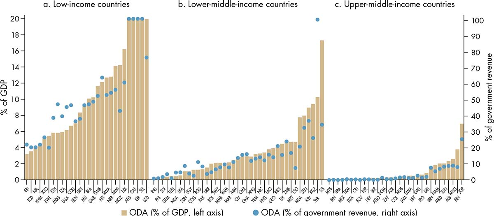
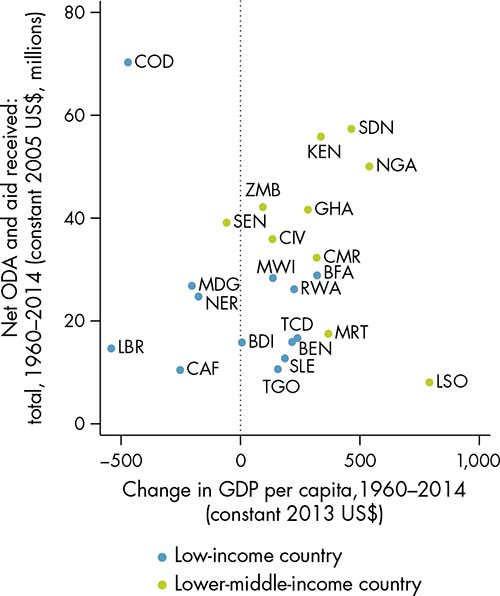

The dynamics of governance do not play out solely within the boundaries of nation-states. Countries today face an interconnected, globalized world characterized by a high velocity and magnitude of flows of capital, trade, ideas, technology, and people. From 1960 to 2011, global trade’s share of the global gross domestic product (GDP) more than doubled, from 25 percent to over 60 percent.1 The share of foreign direct investment (FDI) increased from less than 10 percent to over 40 percent from 1992 to 2010.2 Meanwhile, foreign debt’s share of the global GDP grew from only 11 percent in 1970 to 90 percent in 2010.3 Today, the world is very different from the one in which the current developed countries emerged: cross-border flows were low; they received no aid; and they were not subject to a proliferation of transnational treaties, norms, and regulatory mechanisms. For developing countries, the era of globalization and “global governance” presents both opportunities and challenges.
Globalization can greatly benefit countries in search of sustained and inclusive development. The rapid diffusion of technology and greater access to capital and world markets have enabled annual growth rates of over 7 percent for a subset of developing countries—a previously unfathomable rate of growth that helped lift over 1 billion people out of poverty from 1981 to 2012 (Spence 2011).
Globalization can, however, also present great challenges. By making it possible for domestic actors to send money and resources abroad, transnational flows increase the capacity for them to opt out of local bargains. These flows have also been associated with a marked rise in inequality within countries and with a greater vulnerability of countries to global economic crises, such as the 1997 Asian financial crisis and the 2008–09 global financial crisis.4 Global interactions can undermine domestic social and economic development by exerting power in ways that prevent the adoption of policies fit for the domestic or local context or by reinforcing preexisting conditions that sustain socially undesirable outcomes. The resurgence today of populist politics and its rejection of trade and migration in several Western countries can be seen as a reaction to these negative effects.
The policy bargaining framework discussed in this Report provides a lens for discerning how to maximize the positive impacts of transnational flows and international actors to achieve security, growth, and equity. These flows can be critical instruments for enhancing the ability of domestic actors to commit, coordinate, and cooperate to advance development outcomes. But they also can disrupt these functions by confusing expectations, competing with social norms, and undermining citizen-state accountability. Understanding these effects requires in turn understanding how transnational factors shape the incentives of domestic actors, influence their preferences to change outcomes, and affect contestability in the policy arena.
For developing countries, the era of globalization and “global governance” presents both opportunities and challenges.
At times, international actors enter directly into the policy arena (figure 9.1, panel a). Foreign states, multinational corporations, development agencies, or transnational nongovernmental organizations (NGOs) can gain a seat at the domestic bargaining table as they pursue specific goals or support domestic efforts that are aligned with their interests. However, international actors and mechanisms largely affect the policy arena indirectly. In doing so, they may change incentives and preferences toward enabling or constraining institutional functions for development and open or foreclose the possibilities for contestation.
Figure 9.1 International actors can affect the domestic policy arena by changing the dynamics of contestation, shifting actor incentives, or shaping actor norms

a. International actors can themselves enter the policy arena
b. International actors can provide alternative sites for contestation
c. International actors can empower or shape the incentives of citizens and elites by providing resources
d. International actors can shift the preferences of citizens and elites
Source: WDR 2017 team.
International actors can shape the arena in which policy making and contestation occur by creating alternative spaces in which actors can bargain (figure 9.1, panel b). For example, foreign investors can bring states to the International Centre for Settlement of Investment Disputes (ICSID) for independent arbitration rather than rely on the legal mechanisms of the host state. Citizens of countries party to the European Court of Human Rights can bring claims against their home state. Several international human rights treaties require states to report and answer to an international expert body. And a vast number of international and transnational forums exist for the development of industry-specific rules, monitoring their application and sanctioning violations to various degrees. The proliferation of these forums raises unresolved questions about their functional design, political legitimacy, and accountability. For example, as states increasingly subcontract government functions such as public infrastructure and service delivery, the tools of commercial arbitration may undercut the role of citizens in accountability. This challenge is reflected in contemporary public concerns about the role of investor-state dispute settlement in bilateral and multilateral investment treaties such as the Trans-Pacific Partnership.
Transnational flows and mechanisms can change the payoff structure and incentives of domestic actors by providing inducements or threats (figure 9.1, panel c). For example, conditions attached to foreign aid (conditionality) can make assistance dependent on specific behavior by domestic actors. Similarly, the desire to attract foreign investment can act as an incentive for positive changes in domestic governance. For example, the pursuit of foreign investment in China and Vietnam spurred institutional improvements in economic management at the provincial level, with greater flows leading to even more institutional reforms (Dang 2013; Long, Yang, and Zhang 2015). International trade agreements, by changing the incentives of domestic actors, can serve as a commitment device. At the same time, the incentives and payoffs may be structured in favor of private goods rather than global or national public goods. A government may sign a trade agreement to tie its hands in the face of domestic vested interests that might induce it to implement suboptimal policies such as high tariffs, or it may use transnational flows as a reason to avoid regulating a costly and challenging issue, such as the environmental damage caused by mines (Maggi and Rodríguez-Clare 1998, 2007; Shemberg 2009).
International actors and transnational interactions also shape preferences by influencing the ideas and beliefs of actors in the domestic policy arena (figure 9.1, panel d). Improvements in technology, by facilitating greater global connectivity, have helped spread international ideas and norms. Transnational networks of technical experts can play an important role in changing preferences and internalizing new norms through the diffusion of evidence and authoritative expertise.5 In China, the interaction of the National Environmental Protection Agency (NEPA) with experts resulted in new perspectives, peer standards, data, and research findings that NEPA drew on to shape the debate over accession to the Montreal Protocol to protect the ozone layer, shifting the views of other political actors and allowing successful bargaining with more domestically grounded agencies, including the State Meteorological Administration (Economy 2001). Beyond finance and other forms of leverage, development actors can be most influential through the dissemination of knowledge and evidence. But, as Michel Foucault has argued, knowledge and evidence can also reflect particular agendas and reduce the space of public discourse (Lukes 1986). Development indicators, for example, provide certainty and an impression that a clear trajectory exists to changing phenomena that are inherently complex and contested, such as peace or well-being (Davis, Kingsbury, and Merry 2012).
This chapter looks at how international actors can influence domestic governance dynamics through two primary instruments: (1) the introduction and diffusion of transnational rules, norms, and regulations and (2) the distribution of official development assistance or foreign aid. In discussing both instruments, this chapter focuses on the mechanisms through which these instruments act on the incentives and preferences of actors in the policy arena and the contestability of that arena.
As the flows across borders expand, the instruments and mechanisms used to manage them expand as well (figure 9.2). Since the late 20th century, an ever-increasing number of international and transnational efforts have been made to govern the activities, relationships, and behavior that transcend national frontiers. These efforts stem in part from the nature of today’s global challenges—such as climate, finance, and cross-border crime—which require solutions that go beyond the traditional state model of regulation. Unlike traditional international relations, these transnational efforts involve a broad array of actors—nation-states, multilateral organizations, private actors, and advocacy groups—and cover a wide range of issues—business transactions, labor, crime, information management, intellectual property, procurement, utility regulation, human rights, food and safety standards, and environmental sustainability (Hale and Held 2011).
As the flows across borders expand, the instruments and mechanisms used to manage them expand as well.
Figure 9.2 Regulations and legal agreements have proliferated across borders

Sources: Panel a: WDR 2017 team, based on updated database from Chinn and Ito 2006; panel b: WDR 2017 team, based on United Nations 2016.
Note: The category “human rights” in panel b refers to treaties related to human rights, human trafficking, refugees and displaced persons, and the status of women.
Much of this proliferation of regulation has been in pursuit of further deregulation, as exemplified by the increasing de jure openness of capital accounts (figure 9.2, panel a). Other regulations and treaties are intended to enhance coordination on issues of global importance. For example, more than 1,000 multilateral and 1,300 bilateral environmental agreements are now in place (Green 2014).
The formation and diffusion of this overlapping web of transnational rules mirror this Report’s framework on a transnational level. The nature and content of each regime are a product of contestation among multiple actors with varying incentives, preferences, and relative power. Transnational rules are institutionalized in some form of instrument, from authoritative/binding legal instruments to nonbinding declarations of norms and voluntary standards and regulatory regimes.6 These instruments perform the functions of commitment, coordination, or cooperation through various mechanisms, from coercion to socialization (table 9.1). They may directly target state governments, as do the European Union’s (EU’s) fiscal and monetary rules or labor and tax standards aimed at avoiding a race to the bottom. They may bypass state governments to directly regulate private actors, as do voluntary industry regimes such as the Roundtable on Sustainable Palm Oil. Or they may reach out directly to citizens by legitimating local grievances through international rights and norms (Braithwaite and Drahos 2000; Shaffer 2013).
Table 9.1 Transnational actors, instruments, and mechanisms for influencing domestic governance through incentives, preferences, and contestability
Actors |
Instruments |
Mechanisms |
International governmental organizations • United Nations (multiple agencies) • International financial institutions • World Trade Organization • International courts and tribunals Regional organizations • European Union • African Union • ASEAN • OECD International nongovernmental organizations • Multinational corporations • Professional associations • Advocacy organizations • Epistemic communities Domestic actors • Government officials • Political actors • Private sector actors • Local civil society groups • Grassroots organizations |
Legal and rule-based instruments • International and regional treaties and conventions • International and regional standards, principles, and guidelines • Bilateral treaties • Voluntary standards and norm regimes • Contracts • International courts and arbitration mechanisms Expert knowledge and evidence Public and private capital flows Migration and professional exchanges Security operations |
Incentives • Coercion (economic, military, political) • Rewards • Reciprocity Preferences • Knowledge and capacity transfer • Persuasion • Socialization • Demonstration Contestability • Coalition building • Substitution for domestic arena • Empowerment |
Sources: WDR 2017 team, drawing on Braithwaite and Drahos 2000; Hale and Held 2011; and Shaffer 2013.
Note: ASEAN = Association of Southeast Asian Nations; OECD = Organisation for Economic Co-operation and Development.
What follows is a closer look at how transnational rules interact with the policy arena—specifically, (1) the rules that seek to achieve international cooperation on global goods by changing incentives; (2) the rules that help induce a credible commitment to domestic reform through trade and regional integration incentives; and (3) the rules that serve as focal points for domestic actors to shift preferences and improve coordination to overcome collective action challenges.
In the same way that firms in competitive markets lower prices to attract consumers, when goods, services, and capital are freely exchanged and move internationally countries have an incentive to adopt competitive strategies to gain market share or attract investment. To attract productive investments, countries may lower taxes on corporate income for foreign companies. Competition among countries on these forms of taxation has the effect of depleting the domestic tax base and considerably decreasing revenue. It also tends to shift taxation onto less mobile factors such as labor. In turn, lower revenue means that countries have to shrink spending, with detrimental effects on the well-being of the poorest and least powerful in society. Moreover, competition to boost exports may result in lax labor and environmental standards (Chau and Kanbur 2005). These are examples of races to the bottom.
Once competition pushes countries to a low equilibrium, they have no incentive to change policy. An attempt by one country to raise taxes on goods and services, capital, or corporate income would result in a loss of sales or investments. Any intervention that could enhance employees’ welfare or the sustainability of production would also raise costs and thus reduce exports and output. Because of the sensitivity of global capital to domestic adjustments and perceptions of investment risk, policy makers seeking global investment may become largely accountable to external actors rather than to domestic constituents. For example, policy makers seeking to increase domestic debt levels to finance an expanded education budget may be prevented from doing so by the fear that international ratings agencies will downgrade their country’s sovereign bond rating, leading to capital flight.
Global coordination is needed to prevent races to the bottom, underprovision of global public goods, and negative cross-border externalities. International actors can strengthen the commitment capacity of states through agreements on specific issues such as investment or environmental standards, labor standards, or tax coordination. If all countries coordinate and adopt the same policy, such as international labor standards (Basu and others 2003), they will all be better off. For example, in parallel with the creation of a common market, the EU set up a Code of Conduct to prevent countries from engaging in harmful tax competition and to harmonize value added taxes on goods and services and, less successfully, corporate taxes and capital income taxes.
Such agreements can strengthen the commitment of countries to specific minimum standards that prevent the occurrence or perpetuation of an undesirable equilibrium. However, in the absence of credible sanctions, incentives to defect are very high. Preventing defection requires recognition that achieving a sustainable agreement is a two-level game, involving both an international bargaining process and a domestic bargaining process (box 9.1). Ultimately, the preferences and relative power of the relevant domestic actors determine the credibility of commitment and the effectiveness of international sanctions.
Box 9.1 Legitimizing the second-best: Governance options for global public goods and the Paris Agreement on climate change
Climate change is a global public goods problem. Solving it requires universal participation (all countries need to reduce emissions), but there is an incentive to free-ride in any agreement. An obvious solution is a global governance body that ensures the participation of all countries and a fair distribution of efforts. From the United Nations Framework Convention on Climate Change (UNFCCC) in 1992 through the Kyoto Protocol in 1997 and the Copenhagen negotiations in 2009, international negotiations have tried to create such a framework to decide on a global target for temperature change, country-specific emission targets, and a set of processes to ensure flexibility and compliance.
The Kyoto Protocol failed to achieve universal participation. Developing countries were reluctant to take on commitments that could slow their economic growth, and many countries were reluctant to expose themselves to possible sanctions from a supranational body (Stewart and Wiener 2003). As predicted by economic theory, in the absence of a supranational governance body a credible commitment was impossible to achieve (Carraro and Siniscalco 1992; Barrett 1994). The 2015 Copenhagen conference, however, was a paradigm shift, moving away from the first-best option of sanctions to a system of “pledge-and-review,” by which countries make unilateral commitments that are reviewed and monitored by the international community (Barrett, Carraro, and de Melo 2015).
These developments led to universal participation in the Paris Agreement, underpinned by 162 unilateral commitments to contribute to reductions in global emissions. The agreement, which went into effect in November 2016, also includes provisions to facilitate the adaptation to climate change, support to cope with unavoidable loss and damage, financial flows and financing instruments, and processes for the monitoring and revision of commitments.
The pledge-and-review scheme has two obvious limitations. First, there is no reason to expect that the sum of the unilateral commitments will meet the global target of maximum temperature change, and indeed they currently do not meet the goal of the Paris Agreement (limit warming to 2 degrees and try to achieve 1.5 degrees). The hope is that commitment revisions will lead to a gradual increase in ambition (van Asselt 2016). By providing a “ratcheting mechanism” that encourages countries to follow the lead of others in increasing commitments, the Paris Agreement is an important coordination mechanism (Keohane and Victor 2016). But if the problem is one of cooperation—that is, some countries care more about climate change than others—then such a cycle of revisions could lead to a stagnation of ambition, or even to a race to the bottom (Nordhaus 2015).
The second limitation is the lack of a compliance mechanism beyond monitoring that enables “naming and shaming” of countries that do not deliver on their commitment (Aldy 2014). However, climate negotiations are part of a broader network of agreements. Thus failing to deliver on climate commitments may not lead to direct sanctions, but it could have a cost in other areas such as trade or technological cooperation. Nordhaus (2015) suggests that even a minimum trade-related cost for noncompliance would lead to much greater participation and ambition.
Even though the Paris Agreement is far from an optimal mechanism to govern global public goods (Stiglitz 2015), it is an attractive second-best option, building on countries’ self-interest in implementing climate policy actions at the country level (Busby 2016; Keohane and Victor 2016).
Source: Prepared for WDR 2017 by Stéphane Hallegatte.
The desire to attract investment and expand trade can also provide incentives for improvements in domestic governance. Indeed, international agreements on economic integration can mean that domestic actors will make credible commitments to follow through on economic reforms. The success of the EU integration process, for example, demonstrates the power of inducements. Prospective member countries have to change their domestic rules to abide by the 80,000 pages of regulations in the acquis communautaire. For those countries that have joined the EU, the potential economic benefits of joining outweighed any loss of domestic autonomy in specific areas, and the benefits of accession were used by elites to overcome domestic resistance to the required reforms. EU membership contributed to the consolidation of democratic institutions in former dictatorships in the European periphery, such as Greece, Portugal, and Spain in the 1980s, and in central and eastern European countries in the former communist bloc in the 1990s and 2000s.
The possibility of accession to the General Agreement on Tariffs and Trade (GATT) and then its successor, the World Trade Organization (WTO), has induced considerable domestic reforms in nations that seek to develop through global trade. WTO accession has had the strongest growth-promoting effects in countries that undertook deeper commitments as part of their accession negotiations, including China and Vietnam. Moreover, this pro-growth effect of accession has been strongest in countries with the weakest domestic governance (Tang and Wei 2009).
In China, the process of WTO accession at the turn of the millennium led to a major restructuring of the economy toward more market- and rules-based mechanisms, with accession acting as a “wrecking ball” for the closed command economy (Woo 2001; Jin 2002). China’s leadership leveraged foreign competition and external commitment to accelerate domestic reforms, including reductions in tariff and nontariff barriers, market access for foreign firms, and protection of intellectual property. China’s commitments to liberalizing its trade in services have been the most radical of any country acceding to the WTO (Mattoo 2004). The accession helped China’s leadership overcome domestic opposition to reforms, and it also signaled to the emerging private sector that reforms were credible. The reforms enhanced the commercial legal environment and forced state-owned enterprises and state-owned banks to restructure and compete on a market basis, facilitating a more modern financial system and rapid private sector growth (Lardy 2002).
Another example of a trade agreement that led to domestic reforms is the Multi Fibre Arrangement (MFA), which went into force in 1974 under GATT. In response to pressure by the United States to protect the U.S. domestic clothing industry, the MFA set quotas for textile exports from developing countries, but it excluded some of the world’s least-developed countries from the quota system. As a result, countries such as Bangladesh, Cambodia, and Tunisia, which could produce more and set prices higher than their competitors, received “quota rents.” In Bangladesh, this positive shock prompted the government to facilitate institutional innovations, including back-to-back letters of credit and the bonded warehouse, which enabled a transformation of the Bangladeshi economy and an evolution of the elite bargain that determined governance dynamics and political reform (Khan 2013).
Trade agreements can help achieve commitment to domestic reforms by empowering new domestic actors. For example, workers at a Nike factory in Mexico succeeded in unionizing by leveraging the corporate codes of conduct and transnational advocacy networks that developed after implementation of the North American Free Trade Agreement (NAFTA)—see Rodríguez Garavito (2005). In Cambodia, a surge in garment exports to the United States following implementation of the MFA led to a bilateral trade agreement in 1999 that used export quotas as a mechanism for improving domestic labor standards, thereby giving greater bargaining power to Cambodian workers. Specifically, the United States agreed to increase garment quotas by 14 percent a year if working conditions complied with international standards, and an International Labour Organization (ILO) project was established to independently monitor workers’ conditions in Cambodian garment factories. This enhanced commitment led to significant improvements in freedom of association following the agreement, with the share of unionized garment workers rising from only 12 percent in 2000 to nearly 50 percent by 2005 (Adler and Woolcock 2009).
Trade agreements can help achieve commitment to domestic reforms by empowering new domestic actors.
And yet the substance and institutional design of trade agreements can harm poor constituencies. At times, they may prompt a regulatory race to the bottom for low-wage or casual workers, such as those in Mexican maquiladoras or the Bangladeshi garment industry (Carr and Chen 2002; Santos 2012). Policy makers and publics are well aware of this problem, and a body of transnational law and regulations has emerged to complement the domestic efforts just described. These efforts, though, face ongoing institutional design challenges—in particular, how to build participatory legitimacy along with effective enforcement. Meanwhile, as these efforts to foster transnational coordination proliferate, evidence suggests that the coordination effects of regulatory instruments should not be overstated. In WTO jurisprudence, whether a restriction on imports counts as a legitimate regulation or a nontariff barrier is indeterminate—a phenomenon recognized by WTO lawyers and staff themselves. The indeterminacy is part of the strength of the regulatory regime: the concept of the nontariff barrier is flexible and potentially context-specific (Lang 2011). And yet those players who know how to navigate the WTO rulemaking and appeals system will do better than those who do not. Among developing nations, this is often those who have the capacity and staff to be repeat players at the WTO (Santos 2012).
The last century has witnessed a “Rights Revolution” in which global treaties and norms have facilitated the spread of the notion of rights (figure 9.3)—see Pinker (2011). International human rights and gender quotas illustrate the ways in which transnational ideas diffuse and the mechanisms through which those ideas affect domestic governance arrangements. Although a range of incentives can lead to the formal adoption of such norms, the norms eventually become effective and internalized according to the extent to which they reshape societal preferences.
Figure 9.3 The “Rights Revolution” has led to a global spread of rights-related norms, facilitated and supported by global treaties and agreements

Source: WDR 2017 team, using data from Google Books Ngram Viewer, based on Pinker 2011.
Source: WDR 2017 team, using data from Asal and Pate (2005).
Note: Policies include economic and political policies that discriminate or favor any ethnic group in a given country-year.
Since passage of the Universal Declaration of Human Rights in 1948, human rights have been increasingly specified and embedded in international treaties, institutions, and organizations. Country adoption and participation have been widespread. However, international treaties are not always effective in changing state behavior and practices. Indeed, a persistent implementation gap exists between the de jure pledge to protect human rights—as measured by states’ ratification of major international human rights treaties and conventions—and actual compliance (figure 9.4). Some scholars argue that human rights are nothing more than window dressing or empty promises that are unable to constrain power or change the behavior of domestic actors (Posner 2014).
Figure 9.4 Human rights treaties are spreading, but de facto changes in state performance are lagging behind

Source: WDR 2017 team, based on Hafner-Burton and Tsutsui 2005.
Note: “Percentage of treaties ratified” measures the share of six core human rights treaties that the average state has ratified in a given year. “Percentage nonrepressive” measures the percentage of states that reported very rare or limited violations of personal integrity rights in a given year, based on data from the Political Terror Scale (Gibney and others 2016).
Explaining why state compliance with human rights treaties and conventions varies requires taking a closer look at the interaction between international norms and the domestic bargaining process. Once signed, international treaties “empower individuals, groups, or parts of the state with different rights preferences that were not empowered to the same extent in the absence of the treaties” (Simmons 2009, 125). By referring to international norms, ordinary citizens and disadvantaged groups can strengthen the legitimacy of their claims and successfully challenge the prevailing norms, pressuring governments to transform state institutions and reform public policies. Elite resistance frequently increases the incentives for domestic actors to build transnational alliances to support their claims. Often referred to as the “boomerang effect,” this dynamic process increases the costs incurred by state actors when resisting change and eventually leads to compliance (Keck and Sikkink 1999). The human rights struggles in Latin American countries during military dictatorships illustrate this point, as well as the mobilization against the apartheid government in South Africa. Indeed, the most transformative social movements of the 20th century—including labor rights, women’s rights, and civil rights, and, more recently, indigenous and environmental movements—have all explicitly adopted the language and instruments of international rights (Heller 2013).
Over the last 25 years, different forms of gender quotas for representation in national legislatures—including legislated quotas, reserved seats, and voluntary party quotas—have spread to more than 100 countries (figure 9.5).7 These new provisions have helped double the percentage of women in the lower house of national legislatures from approximately 10 percent in 1995 to 22 percent in 2015 (Norris and Dahlerup 2015). Quotas for women in local government positions, as in India, are also increasingly common.8 In early adopters—mainly European countries that introduced voluntary party quotas in the 1980s—domestic social movements and left-leaning political parties were especially influential (Ramirez, Soysal, and Shanahan 1997). By contrast, international nongovernmental organizations and multilateral organizations have become increasingly influential for late adopters among developing countries, especially postconflict countries largely dependent on international assistance (Krook 2006; Celis, Krook, and Meier 2011).
Figure 9.5 Gender quota laws have spread worldwide since 1990

Sources: WDR 2017 team, based on Center for Systemic Peace, Polity IV (database), various years; Norris and Dahlerup 2015; and International IDEA, Inter-Parliamentary Union, and Stockholm University, Global Database of Quotas for Women, various years.
Note: The figure includes only quotas introduced at the national level. Moreover, it does not include voluntary party quotas (adopted in 32 countries) because the adoption year varies across parties in a given country.
These processes of international norm diffusion interact with domestic factors to strengthen the bargaining power of women’s organizations and improve their capacity to influence constitutional reforms and lobby for the adoption of gender-sensitive policies. Many countries, however, still face important challenges in closing their implementation gap and achieving the level of political participation for women defined in the quota laws. The gap is larger for legislative quotas. Although these gaps may reflect in part overly ambitious targets, the short time since adoption of the quota, and the weakness of mechanisms to sanction noncompliance, evidence suggests that social norms also play a role. In Spain, for example, a recent study found that political parties nominate female candidates for seats in areas where they have little chance of being elected in order to reduce the risk of losing decision-making power within the party (Esteve-Volart and Bagues 2012). It is yet to be seen how more recent reform efforts by some parties, such as the adoption of “zipper systems” in which male and female candidates are alternated on ballot lists, will influence these dynamics within Spain. Major shocks—such as conflict—can speed up the process of changing norms and create new windows of opportunity for disadvantaged groups. A process of “policy learning” can also occur; initially ineffective quota laws have been revised to improve their effect on the de facto political representation of women (Norris and Dahlerup 2015).
Since the end of World War II, foreign aid has been one of the most prominent policy tools used by high- income countries to promote security, growth, and equity in low-income countries.9 Primarily intended to fill capital shortfalls, official development assistance (ODA) has become a means of meeting a range of development, humanitarian, strategic, and commercial goals. In addition to finance, aid includes the transfer of knowledge, expertise, and ideas intended to influence norms, capacity, and power (box 9.2).
Box 9.2 Aid as a delivery mechanism for transnational rules and ideas
Development actors, especially the international financial institutions, have been among the most influential generators of transnational rules, norms, and ideas, using aid as a diffusion mechanism. Just as economic orthodoxy has evolved over time—from an emphasis on the role of the state in planning and investment in the 1960s and 1970s, to the macroeconomic discipline and market liberalization of the Washington Consensus in the 1980s, to poverty alleviation and market institutions in the 1990s, to achievement of the Millennium Development Goals (MDGs) and improvement of governance institutions in the 2000s—so, too, have aid modalities evolved in search of more effective means of translating these norms into development outcomes.
Ex ante conditionality. Structural adjustment lending policies in the 1980s marked the high point of ex ante conditionality—that is, aid transfers depended on the recipient’s adoption of preset conditions. Today, however, this approach has been largely regarded as a failure because conditional loans proved ineffective as a commitment device. In theory, the threat of nondisbursement, or reward of disbursement, was an incentive to government actors to overcome obstacles to reform because of either opposing objectives or domestic political economy factors. Although ex ante conditionality could sometimes strengthen the hand of reformist governments that needed to swing domestic opinion behind these changes, it proved ineffective in changing incentives and the preferences of opposing elites (Collier and others 1997). This outcome was due in large part to the lack of a credible threat and the time consistency problem: more often than not, donors submitted to pressures to disburse despite the failure of recipients to meet the prescribed conditions (Killick 1997; Kanbur 2000). More fundamentally, the prescribed conditions were often politically infeasible because they sought to disable the systems of patronage needed to hold coalitions together (Mbembe 2001). In short, the diffusion of norms through coercion was incapable of changing the much stronger dynamics of the domestic bargaining arena (Temple 2010).
Ex post conditionality. In the 1990s, ex ante conditionality was largely replaced by aid modalities based on principles of partnership and ownership, assuming that aid would be more effective in good policy environments (World Bank 1998; Dollar and Burnside 2000). Many donors adopted a form of ex post conditionality under which aid in the form of budget support (mostly unconditional funds) would be directed to countries that themselves adopted good economic and governance policies. Although aid still served as an incentive, its primary role was to amplify reform efforts and maximize poverty reduction in those places most likely to achieve results. Yet another feature was an emphasis on social participation in the development of policies, as introduced in the Poverty Reduction Strategy Paper (PRSP) process adopted by the International Monetary Fund (IMF) and the World Bank as a means of enhancing the contestability of the policy arena. These developments were also subject to criticism, most notably around the imperfect science of measuring institutional performance for purposes of aid allocation and the questionable concept of “ownership” in view of the power imbalance both between donors and recipients and between government elites and other domestic constituencies (Wilhelm and Krause 2008). At worst, such an approach can give rise to enhanced legitimacy for governments that go through the motions of “ownership,” while in fact reducing the space for local contestation and innovation. Some observers questioned the extent to which this method was an answer to the flaws of ex ante conditionality.a
Outcome-based conditionality. The most recent generation of aid instruments seeks to overcome the difficulty of influencing the bargaining arena to yield “good” policies by focusing instead on outcomes. Donors have introduced a range of results-based approaches, such as the World Bank’s Performance for Results (PforR) instrument, which disburses upon achievement of results according to agreed-on performance indicators. This outcome-based conditionality is particularly suited to social sector outcomes such as those set out in the MDGs. In theory, by setting clearly defined objectives, indicators, and verification protocols for programs initiated by a government, this method seeks to enhance government accountability to its own goals (Temple 2010). Another noteworthy development is the New Deal for Engagement in Fragile States, which established a mutual compact between Organisation for Economic Co-operation and Development donors and a group of fragile states known as the g7+ to support country-led strategies based on a set of overarching peace-building and state-building goals.
Source: WDR 2017 team.
a. Craig and Porter (2003); van de Walle (2005); Andrews, Pritchett, and Woolcock (2013).
Between 1960 and 2013, member countries of the Organisation for Economic Co-operation and Development (OECD) that are also members of the Development Assistance Committee (DAC) provided some US$3.5 trillion (constant 2009 dollars) in aid. Non-OECD economies are an increasingly important source of aid: in 2014 the flow of aid to developing countries from both DAC and non-DAC contributors amounted to over US$161 billion (map 9.1). Although aid has ebbed and flowed over time, its significant increase over the last two decades coincides with the establishment of the Millennium Development Goals, as well as with the surge in flows toward conflict- affected countries in the aftermath of the cold war.10 Still, few donors have met the ODA target of 0.7 percent of gross national income (GNI), which they first agreed to in 1970.
Map 9.1 Aid flows amounted to over US$161 billion from donor countries (purple) to recipient countries (orange and green) in 2014
Aid flows (US$)

Source: WDR 2017 team, using data from the Organisation for Economic Co-operation and Development.
Note: Data are on a per capita basis as of 2014. Shades of orange denote recipient countries. Shades of purple denote donor countries. The darker the country, the higher is the amount of aid received or transferred. Green countries (China, Indonesia, and Panama) are recipient countries in which the flow of aid received is smaller than the repayment of debts.
Although the volume of aid is increasing, its share relative to flows of private capital and other sources of finance is decreasing. In middle-income countries, aid makes up only 1.9 percent of GDP (median), compared with 9.6 percent in low-income countries. Foreign direct investment—largely reflecting new and increased exploitation of natural resources—and remittances have overtaken aid as a percentage of GDP in 21 out of 43 African countries based on the available data.11 Nevertheless, aid makes up more than 10 percent of GDP for half of all low-income countries and over 30 percent of total revenues for 26 developing countries (figure 9.6).
Figure 9.6 Aid makes up a large share of GDP and revenue in many developing countries

Sources: WDR 2017 team. Official development assistance (ODA) data: Organisation for Economic Co-operation and Development; government revenue data: IMF, World Economic Outlook, various years.
Note: The graphs show ODA from all donors to all recipients in low- and middle-income countries with a population of at least 1 million. Figures for ODA (percent of GDP) are capped at 20 percent of GDP for the sake of visualization. The underlying uncapped data are Afghanistan, 24.1 percent; Central African Republic, 35.4 percent; Liberia, 37.0 percent; and Malawi, 21.8 percent. Figures for ODA (percent of government revenue) are capped at 100 percent for the sake of visualization. The underlying uncapped data are Afghanistan, 105.2 percent; Central African Republic, 260.6 percent; Liberia, 126.0 percent; and Sierra Leone, 143.2 percent.
A look at the impact of more than five decades of development aid on security, growth, and equity reveals the great variation across regions and countries (figure 9.7). As this Report explores, aid has to be understood in terms of how it interacts with the existing domestic power imbalances and how it affects the decision-making processes and the allocation of resources. Some groups and actors are better positioned to channel foreign aid flows to their benefit or to that of their constituencies, whether in or outside government, and thus strengthen their position of influence. In this way, aid, like other resources, can reinforce or offset existing power imbalances, resulting in heterogeneous outcomes when it comes to growth and equity, depending on the specific context.
Figure 9.7 Low- and lower-middle-income countries vary greatly in the amount of aid received and improvement in GDP per capita

Source: WDR 2017 team, using data from the World Bank, World Development Indicators (database).
Note: GDP = gross domestic product; ODA = official development assistance.
Two decades ago, an influential study concluded that the link between aid and growth is much stronger in countries with sound policy and institutions, leading to calls for donors to direct assistance to those states that could demonstrate good governance (Burnside and Dollar 2000).12 But what effect can aid have on governance? This question has been the subject of considerable debate among leading scholars, spawning an array of attempts to measure empirically whether aid in the aggregate promotes or undermines the quality of institutions in recipient countries. Some of the pessimists, including Deaton (2013) and Easterly (2006), claim that large amounts of aid can deepen pathologies in countries with poor governance.13 Conversely, the optimists argue that aid can help overcome resistance to good policies and support the development of political institutions, including democracy.14 Unfortunately, the evidence belies clear answers, in large part because of the inherent methodological flaws, including the fact that aid aggregations lump together different sources (bilateral and multilateral); different modalities (budget support, project finance, technical assistance); different desired outcomes (development, democracy, humanitarian relief); and different local contexts. Ultimately, aid is neither inherently good nor bad for governance. What matters is how aid interacts with the prevailing domestic context and which groups or actors see their influence enhanced.
Ultimately, aid is neither inherently good nor bad for governance. What matters is how aid interacts with the prevailing domestic context and which groups or actors see their influence enhanced.
Although empirically inconclusive, the literature converges on a set of analytical arguments that sheds light on the conditions under which aid can have a positive or a negative impact on governance. Studies of aid in the aggregate include large amounts of bilateral aid, which historically has been used to project a dynamic mix of the donor’s strategic, commercial, and programmatic priorities. Significant correlations have been documented between the allocation of aid and a range of donor interests, including former colonial ties, voting record in the United Nations, business opportunities, and supply-side factors such as a food surplus (Alesina and Dollar 2000; Qian 2015). According to one argument, in inherently unstable or institutionally fragile environments, the multiple purposes often projected through ODA—stability, security, humanitarian assistance, state building—frequently have contradictory and—most often—unintended effects (Paris and Sisk 2007). When aid is granted without making the development objective of the recipient country the priority, it is more likely to have negative effects on governance.
Another argument focuses on the great poten- tial for aid funds to be misused by those in power, whether through outright embezzlement (perhaps best illustrated by the case of Mobutu Sese Seko, former dictator of the Democratic Republic of Congo, who reportedly appropriated $12 billion in aid money) or through the diversion of aid money—or government funds freed up by the injection of aid money—to nondevelopment aims that reinforce extractive, patrimonial, and exclusionary power structures (Ahmed 2012; Deaton 2013). Several econometric studies have found a negative correlation between high levels of aid and the accountability of political institutions.15 This risk is even greater where aid is unconditional and where political elites do not face organized opposition (Acemoglu, Robinson, and Verdier 2004).16 Some investigators have argued that large amounts of aid may encourage political instability and coup attempts as individuals and groups vie for the opportunity to control aid-financed assets (Grossman 1992).
Underlying these arguments is the claim that aid can undermine the relationship between the state and its citizens by making the state less responsive to their demands. The more a state relies on revenues from the international community, the fewer incentives it has to build the public institutions necessary to mobilize domestic revenues through taxation. And the less a state relies on its domestic tax base, the more its state-citizen accountability erodes (Moore 2004). Aid has thus been likened to the natural resource curse: a windfall of unearned income that enables irresponsible government spending and behavior, unconstrained by the kind of state-citizen social contract thought to lie at the heart of modern democracies.17 However, the empirical evidence linking aid flows to domestic taxation is mixed (box 9.3).
Box 9.3 The impact of aid on domestic resource mobilization: What does the evidence say?
There is a growing consensus that increasing the mobilization of domestic resources can enhance accountability, particularly if such efforts are explicitly linked to the provision of public goods. If policy makers need to depend on broad-based taxation—or indebtedness, which implies more taxation in the future—they are more likely to include citizens and elites in policy discussions. The need for revenue to finance wars led European states to bargain with subject populations for greater taxation (Tilly 1990). Once taxed, citizens demand a greater say in state affairs. As 18th-century American colonists claimed, “Taxation without representation is tyranny.” More recently, in Sub-Saharan Africa paying taxes has been shown to increase political interest (Broms 2015).
Does foreign aid undermine domestic resource mobilization and thus accountability to citizens? Studies testing that hypothesis initially showed a negative correlation between the two (most notably, Gupta and others 2004). More recently, these studies have been refuted by the adoption of different data sets (Morrissey and Torrance 2015) or econometric techniques.a Although the behavioral effect of aid flows in undermining accountability has been tested and isolated in experimental settings (Martin 2014; Paler 2014), in reality the relationship is more complex and seems to depend on three factors: (1) the type of aid (for example, grant or debt, budget support, or project- specific); (2) the contemporaneous effects of policies associated with the aid; and (3) more important, the governance setting specific to each country.
The effects of domestic resource mobilization also depend on the nature of taxation. Some taxes do not enhance accountability (resource taxation) or have distortionary effects (trade taxes). International corporate tax competition has diminished states’ capacity for domestic resource mobilization (see earlier discussion on races to the bottom). In environments with low savings rates or the potential for capital flight and tax evasion, consumption taxes are most likely to be effective, but also likely to be regressive. In 9 out of 25 countries with household survey data available for circa 2010, the net effect of all government taxing and spending was to leave the poor worse off in terms of actual consumption of private goods and services (Lustig 2016).
Source: WDR 2017 team.
a. Clist and Morrissey (2011) invalidate the contemporaneous negative correlation found in Gupta and others (2004) by introducing a lagged effect of aid on taxation, concluding that the relationship is negligible.
A growing theoretical and empirical literature is examining how development projects interact with the policy arena to produce three possible outcomes for governance: no effects, negative effects, or positive (generative) effects.
The first category includes projects that, intentionally or not, miss opportunities to reshape elite incentives and preferences. Projects that deliver goods directly, and thus circumvent government systems, may succeed in the immediate effort (and, indeed, this can be a worthy result), but they may have little to no effect on the quality of governance. Some community-driven development initiatives fall into this category.18
Projects that aim to directly improve governance arrangements, such as public sector reform or demand-side initiatives, may end up creating negative dynamics by providing incentives that reinforce the preexisting power imbalances. The tendency of donors to introduce reforms based on best-practice solutions that worked elsewhere (with the expectation that tight monitoring of top-down implementation will yield similar results) has been called an example of isomorphic mimicry, a term drawn from organizational sociology (DiMaggio and Powell 1983). These reforms focus on forms—such as laws, systems, and procedures—without paying attention to how they change the nature of the policy arena. This practice can create “capability traps” when recipient governments adopt these forms to ensure flows of donor financing and to reap legitimacy gains, while evading more fundamental reforms to make the functioning of institutions more effective. Not only does this approach leave recipients with unsustainable and dysfunctional institutions, but it also may reduce the space for local innovation and collective action (Pritchett, Woolcock, and Andrews 2010; Andrews, Pritchett, and Woolcock 2013).
Positive effects are also possible when donor engagement supports the emergence of more accountable and equitable governing arrangements embedded in the domestic context. Certainly, many projects do succeed in doing so, but when and how generative effects take place are difficult to predict in advance because of the web of intersecting and evolving factors that determine how donor initiatives engage with local spaces, including the vagaries of internal politics, shocks of various sizes and effects, and a range of contextual factors. Indeed, many people have been trying to think “politically” about aid in order to overcome challenges to its effectiveness (box 9.4). A burgeoning literature on ways to increase the chances of generative outcomes points to a common set of principles, which are discussed in the next section.
Box 9.4 Beyond technocratic approaches: Opening the door to considerations of politics and power in development policy
The last 10 years have seen a striking rise in discussions of politics and power in development policy circles. This new focus reflects a reaction against technocratic approaches that rely on the provision of capital and injections of technical know-how to overcome development challenges. It grows out of the evolution of governance programming, which, after emerging in the 1990s, encountered serious limits when well-intended efforts to strengthen governance institutions in poor countries faced entrenched resistance to reform and other structural obstacles.
One result has been the progressive incorporation of political economy analysis by many development organizations and practitioners as a basic tool of program design. Debates over how much the growing use of political economy analysis is actually resulting in more effective development programs remain heated, but most organizations are now willing to concede that attempting to operate in complex, challenging, and diverse national contexts does require at least some concerted efforts to understand the local political economy of reform—that is, who are the winners and the losers and who holds the balance of power in such processes.
Potentially, much deeper change involves establishing new types of development programming that embody recognition of development as an inherently political process—one that consists, in the words of the late Adrian Leftwich (2004, 115), of “conflict, cooperation and negotiation in the way we use, produce, and distribute resources.” Adherents of the “Doing Development Differently” manifesto emphasize the importance of focusing on local solutions advanced by local conveners in processes legitimized at all levels, while proceeding through rapid cycles of planning, action, and reflection, and managing risks by making small bets. The Developmental Leadership Program stresses the importance of leadership in development, defining leadership as a political process involving authority and a capacity to mobilize people and resources and to forge coalitions. The recently launched Global Partnership on Collaborative Leadership for Development seeks to put leadership and coalitions at the center of development, and the Global Delivery Initiative is developing an evidence base for using principles of the science of delivery. At the U.K. Department for International Development, serious attention to how political settlements are established and sustained in fragile states is a central element of politically smart development work. An informal coalition of practitioners organized under the rubric of “Thinking and Working Politically” aims to advance innovative efforts to move politics and power from the margins to the core of development thinking and action. This approach entails ensuring that attention to these issues extends well beyond their original home in governance work to all major areas of development practice, from health and education to transportation and food, among other things.
A strong sense of “At last!” accompanies this push to take politics in development seriously—relief that outdated, artificial walls created in the early days of development assistance are finally being dismantled. Yet, changing development practices is hard. Many of the operational imperatives that arise from greater attention to politics and power—such as the need to increase the flexibility of implementation, to tolerate greater risk and ambiguity, to devolve power from aid providers to aid partners, and to avoid simplistic linear schemes for measuring results—run up against long-established bureaucratic structures, practices, and habits. In addition, taking politics seriously in development points directly to the need to challenge the interests of the power holders that control institutions—something that many development organizations have not yet decided they are willing to do, especially in the current environment of heightened sensitivity in many countries about national sovereignty. The development community is talking the talk of politics. How much it will walk the walk is not yet clear.
Source: Prepared for WDR 2017 by Thomas Carothers, Vice President for Studies, Carnegie Endowment for International Peace.
Recognition that development is an inherently contentious process that implicates power imbalances and social norms is not new. Hirschman documented this observation most eloquently using World Bank projects in his 1967 classic, Development Projects Observed. Building on the literature and knowledge base that have emerged over the last few decades, the framework explored in this Report points to the following four principles to guide efforts to use aid in ways that foster positive governance dynamics for development outcomes.
Diagnose the underlying functional problem. As discussed in chapter 2, diagnoses of development problems—and proposed prescriptions—often focus on proximate causes. The World Development Report 2015: Mind, Society, and Behavior (World Bank 2015) called for expanding diagnostic methods to identify the individual psychological, behavioral, and social obstacles underlying development problems. This Report has emphasized the need to understand the underlying governance challenges that hinder the adoption and implementation of policies that can improve security, growth, and equity outcomes. Diagnostic approaches should home in on the specific commitment and collective action problems that stand in the way of achieving outcomes and on the ways in which power asymmetries in the policy arena constrain these functions.
Target development cooperation in ways that overcome obstacles in the policy arena. At times, it is most appropriate for aid to steer clear of the policy arena in order to deliver direct benefits to populations in need. Emergency and disaster responses, humanitarian aid, and, in some cases, direct service delivery may warrant aid approaches that work in parallel with domestic governance.19 However, where aid is intended to support sustained improvements in development outcomes, the most important role it can play is to facilitate changes in the policy arena that will alleviate existing constraints to the adoption and implementation of development-oriented policies. As emphasized in this Report, this means focusing on three key levers of change: incentives, preferences and beliefs, and contestability.
The use of financial forms of aid as an incentive to influence the policy arena is discussed in box 9.2. Beyond providing monetary support, aid in the form of technical assistance, analytical expertise, and knowledge sharing can be a powerful means of changing preferences, especially where it enables internal debate and adaptation. Supporting the generation of evidence about the effectiveness of policies and making such evidence publicly available in transparent ways will enhance an informed public debate about policy (Banerjee 2007; Devarajan and Khemani 2016).
Understanding of the role of aid in promoting contestability is at an earlier stage. The last decade has seen the proliferation of demand-side, participatory, and multistakeholder donor–funded aid initiatives under the rubrics of social accountability, legal empowerment, open governance and transparency, and citizen engagement. Evaluations of such programs have pointed to the need to strengthen the dissemination of information and bottom-up approaches, but also to focus on creating enabling environments that activate collective action and promote a commitment to respond (Fox 2015; Khemani and others 2016).
Time frames are critical. Ultimately, aid can only nudge or accelerate a development trajectory that is determined by a complex set of intricately connected, self-reinforcing factors. Indeed, it may be ill-advised for those pursuing development aims that confront deep-vested interests or threaten a delicate stability to use aid in ways that disrupt the existing agreements in the policy arena. Although interventions may have little impact within the life span of a project, they can aim to set in motion a collective dynamic that, over time, will reduce power asymmetries, effectively change incentives, and reshape preferences. Attention to the dynamics of elite bargains, as discussed in chapter 7, can help identify strategic opportunities to invest in ways that align with the interest of influential groups and also bring other actors into the policy arena, enhancing the adaptive capacity of societies in more inclusive ways.
Anticipate opposition, shifting interests, and unintended consequences. Over the last few years, development practitioners have seized on a principle long established in the organizational change literature: complex problems require solutions based on incremental and adaptive efforts supported by strong learning feedback loops (see box 9.4). This principle is particularly important because efforts to change the policy arena will often trigger opposition and backsliding, and they may yield unanticipated consequences—both positive and negative. It should be assumed that the progress of reform will not be linear, that adaptations will be necessary, and that domestic coalitions for reform must be supported to reduce the risk of reversal.
Applying such measures will require not only particular skill sets and methodologies, but, most important, an enabling environment within development institutions. Several multilateral and bilateral organizations are exploring ways in which the development community can implement internal reforms as they seek more agile, more flexible, and more adaptive projects. Partnerships such as the Global Delivery Initiative also look at the methodologies and approaches available for development practitioners to work more adaptively through citizen engagement tools and feedback mechanisms, information and communication technologies, and real-time practitioner exchanges in order to overcome complex problems, such as those faced during governance projects.
Several multilateral and bilateral organizations are exploring ways in which the development community can implement internal reforms as they seek more agile, more flexible, and more adaptive projects.
Look beyond the traditional aid modalities. The declining role of official development assistance relative to other forms of capital and the inherent limitations of the traditional foreign aid model in dealing with many of today’s challenges call for a broader approach to achieving the United Nations’ Sustainable Development Goals. As discussed in this chapter, the increasingly complex and interconnected realm of transnational rules, agreements, and regulations driven by the public and private actors has a significant influence on domestic governance and the achievement of development outcomes. In many cases, the domestic policy space for tackling development challenges is significantly constrained by actions and decisions made elsewhere. Control of corruption, crime, and security at the country level, for example, may depend on how the flows of goods, capital, and migrants are regulated at the transnational level or in the domestic policy arenas of other states (see spotlight 13 on illicit financial flows). The impact of foreign direct investment on local outcomes may be largely determined by how multinational corporations are regulated by their home states as well as through transnational rules that encourage races to the top rather than the bottom. The growing role of private actors and finance in a wide range of development activities—from utilities to education to infrastructure—also highlights the importance of upstream policy arenas that aim to ensure accountability for the public good.
International actors should enhance efforts to engage in the two-level game, using transnational coordination and commitment devices backed by the promotion of incentives, preferences, and contestability in the domestic policy arena to help achieve security, growth, and equity goals. They also might look inward to the ways in which their own policy arenas have increasingly significant impacts on development outcomes across the globe.
1. World Bank, World Development Indicators (database), various years, sum of exports and imports of goods and services worldwide.
2. Updated and extended version of data set constructed by Lane and Milesi-Ferretti (2007).
3. Updated and extended version of data set constructed by Lane and Milesi-Ferretti (2007).
4. Bourguignon (2015) and Milanović (2016) have shown that inequality among nations has decreased substantially, whereas inequality within countries has soared, with the exception of Latin American countries, where income inequality has decreased slightly over the last 15 years.
5. Haas (1992, 3) describes an epistemic community as “a network of professionals with recognized expertise and competence in a particular domain and an authoritative claim to policy-relevant knowledge within that domain or issue-area.”
6. Transnational rules are similar to the so-called international regimes in the international relations and international political economy literature. See, for example, Ruggie (1975) and Krasner (1983).
7. Legislated gender quotas and reserved seats are typically introduced through changes in electoral laws or constitutions, whereas voluntary party quotas are adopted by individual parties that commit to a specific share of female candidates.
8. About 40 percent of the world’s countries have some form of gender quota, according to the World Bank’s 2016 Women, Business, and the Law database: 73 countries have quotas at the national level, and 65 countries have quotas at the local government level. Some countries have quotas at both the national and local levels; others have one but not both. For example, India adopted a quota at the local level but not at the national level.
9. Foreign aid refers to official development assistance as defined by the Organisation for Economic Co-operation and Development.
10. This increase in foreign aid accompanied the steep rise in peacekeeping operations in the 1990s and the post–9/11 interventions in Iraq and Afghanistan.
11. WDR 2017 team, based on data from OECD (ODA); World Bank, Africa Development Indicators, various years (FDI/GDP); and World Bank, World Development Indicators (database, GDP and remittances/GDP). FDI and remittances refer to the latest available data point.
12. See also World Bank (1998). The findings of Burnside and Dollar (2000) have been called into question by Easterly, Levine, and Roodman (2003).
13. This leads to the unsettling view that “when the ‘conditions for development’ are present, aid is not required. When local conditions are hostile to development, aid is not useful, and it will do harm if it perpetuates those conditions” (Deaton 2013, 273). See also Easterly (2006).
14. See, for example, Goldsmith (2001); Dunning (2004); Wright (2009); and Dietrich and Wright (2013).
15. Among the cross-country studies that find a negative correlation between aid and governance quality are Braütigam and Knack (2004); Moss, Pettersson, and van de Walle (2006); Djankov, Montalvo, and Reynal-Querol (2008); Bueno de Mesquita and Smith (2009); Busse and Gröning (2009); and Rajan and Subramanian (2011).
16. But also see Tavares (2003).
17. The “aid curse” argument is made by Moss, Pettersson, and van de Walle (2006); Collier (2007); and Djankov, Montalvo, and Reynal-Querol (2008).
18. See Casey, Glennerster, and Miguel (2012); Wong (2012); King (2013); Mansuri and Rao (2013); and Humphreys, Sanchez de la Sierra, and Van der Windt (2015).
19. But even these interventions can have significant indirect impacts on governance in both negative and positive ways.
Acemoglu, Daron, James A. Robinson, and Thierry Verdier. 2004. “Kleptocracy and Divide-and-Rule: A Model of Personal Rule.” Journal of the European Economic Association 2 (2–3): 132–92.
Adler, Daniel, and Michael Woolcock. 2009. “Justice without the Rule of Law? The Challenge of Rights-Based Industrial Relations in Contemporary Cambodia.” Justice and Development Working Paper 2 (2), World Bank, Washington, DC.
Ahmed, Faisal Z. 2012. “The Perils of Unearned Foreign Income: Aid, Remittances, and Government Survival.” American Political Science Review 106 (1): 146–65.
Aldy, Joseph E. 2014. “The Crucial Role of Policy Surveillance in International Climate Policy.” Climatic Change 126 (3): 279–92.
Alesina, Alberto, and David Dollar. 2000. “Who Gives Foreign Aid to Whom and Why?” Journal of Economic Growth 5 (1): 33–63.
Andrews, Matt, Lant Pritchett, and Michael Woolcock. 2013. “Escaping Capability Traps through Problem- Driven Iterative Adaptation (PDIA).” World Development 51 (C): 234–44.
Asal, Victor, and Amy Pate. 2005. “The Decline of Ethnic Political Discrimination, 1990–2003.” In Peace and Conflict 2005: A Global Survey of Armed Conflicts, Self- Determination Movements, and Democracy, edited by T. R. Gurr and M. G. Marshall. College Park, MD: Center for International Development and Conflict Management.
Banerjee, Abhijit Vinayak. 2007. Making Aid Work. Cambridge, MA: MIT Press.
Barrett, Scott. 1994. “Self-Enforcing International Environmental Agreements.” Oxford Economic Papers 46 (Supplement 1): 878–94.
Barrett, Scott, Carlo Carraro, and Jaime de Melo, eds. 2015. Towards a Workable and Effective Climate Regime. London: CEPR Press; Clermont-Ferrand, France: Ferdi.
Basu, Kaushik, Henrik Horn, Lisa Román, and Judith Shapiro, eds. 2003. International Labor Standards: History, Theory, and Policy Options. Malden, MA: Blackwell.
Bourguignon, François. 2015. The Globalization of Inequality. Translated by Thomas Scott-Railton. Princeton, NJ: Princeton University Press.
Braithwaite, John, and Peter Drahos. 2000. Global Business Regulation. Cambridge, U.K.: Cambridge University Press.
Braütigam, Deborah A., and Stephen Knack. 2004. “Foreign Aid, Institutions, and Governance in Sub- Saharan Africa” Economic Development and Cultural Change 52 (2): 255–85.
Broms, Rasmus. 2015. “Putting Up or Shutting Up: On the Individual-Level Relationship between Taxpaying and Political Interest in a Developmental Context.” Journal of Development Studies 51 (1): 93–109.
Bueno de Mesquita, Bruce, and Alastair Smith. 2009. “A Political Economy of Aid.” International Organization 63 (2): 309–40.
Burnside, Craig, and David Dollar. 2000. “Aid, Policies, and Growth.” American Economic Review 90 (4): 847–68.
Busby, Joshua. 2016. “After Paris: Good Enough Climate Governance.” Current History 115 (777): 3–9.
Busse, Matthias, and Steffen Gröning. 2009. “Does Foreign Aid Improve Governance?” Economics Letters 104 (2): 76–78.
Carr, Marilyn, and Martha Chen. 2002. “Globalization and the Informal Economy: How Global Trade and Investment Impact on the Working Poor.” Working Paper on the Informal Economy, International Labour Office, Geneva.
Carraro, Carlo, and Domenico Siniscalco. 1992. “The International Dimension of Environmental Policy.” European Economic Review 36 (2–3): 379–87.
Casey, Katherine, Rachel Glennerster, and Edward Miguel. 2012. “Reshaping Institutions: Evidence on Aid Impacts Using a Preanalysis Plan.” Quarterly Journal of Economics 127 (4): 1755–1812.
Celis, Karen, Mona Lena Krook, and Petra Meier. 2011. “The Rise of Gender Quota Laws: Expanding the Spectrum of Determinants for Electoral Reform.” West European Politics 34 (3): 514–30.
Center for Systemic Peace. Various years. Polity IV (database). Vienna, VA, http://www.systemicpeace.org/polityproject.html.
Chau, Nancy H., and Ravi Kanbur. 2005. “The Race to the Bottom, from the Bottom.” Economica 73 (290): 193–228.
Chinn, Menzie D., and Hiro Ito. 2006. “What Matters for Financial Development? Capital Controls, Institutions, and Interactions.” Journal of Development Economics 81 (1): 163–92.
Clist, Paul, and Oliver Morrissey. 2011. “Aid and Tax Revenue: Signs of a Positive Effect since the 1980s.” Journal of International Development 23 (2): 165–80.
Collier, Paul. 2007. The Bottom Billion: Why the Poorest Countries Are Failing and What Can Be Done about It. Oxford, U.K.: Oxford University Press.
Collier, Paul, Patrick Guillaumont, Sylviane Guillaumont, and Jan Willem Gunning. 1997. “Redesigning Conditionality.” World Development 25 (9): 1399–1407.
Craig, David, and Douglas Porter. 2003. “Poverty Reduction Strategy Papers: A New Convergence.” World Development 30 (1): 53–69.
Dang, Duc Anh. 2013. “How Foreign Direct Investment Promotes Institutional Quality: Evidence from Vietnam.” Journal of Comparative Economics 41 (4): 1054–72.
Davis, Kevin, Benedict Kingsbury, and Sally Engle Merry. 2012. “Indicators as a Technology of Global Governance.” Law and Society Review 46 (1): 71–104.
Deaton, Angus. 2013. The Great Escape: Health, Wealth, and the Origins of Inequality. Princeton, NJ: Princeton University Press.
Devarajan, Shantayanan, and Stuti Khemani. 2016. “If Politics Is the Problem, How Can External Actors Be Part of the Solution?” Policy Research Working Paper 7761, World Bank, Washington, DC.
Dietrich, Simone, and Joseph Wright. 2013. “Foreign Aid and Democratic Development in Africa.” In Democratic Trajectories in Africa: Unravelling the Impact of Foreign Aid, edited by Danielle Resnick and Nicolas van de Walle, 56–86. WIDER Studies in Development Economics. Helsinki: United Nations University-World Institute for Development Economics Research; New York: Oxford University Press.
DiMaggio, Paul J., and Walter W. Powell. 1983. “The Iron Cage Revisited: Institutional Isomorphism and Collective Rationality in Organizational Fields.” American Sociological Review 48 (2): 147–60.
Djankov, Simeon, José García Montalvo, and Marta Reynal-Querol. 2008. “The Curse of Aid.” Journal of Economic Growth 13 (3): 169–94.
Dollar, David, and Craig Burnside. 2000. “Aid, Policies, and Growth.” American Economics Review 90 (4): 847–68.
Dunning, Thad. 2004. “Conditioning the Effects of Aid: Cold War Politics, Donor Credibility, and Democracy in Africa.” International Organization 58 (2): 409–23.
Easterly, William Russell. 2006. The White Man’s Burden: Why the West’s Efforts to Aid the Rest Have Done So Much Ill and So Little Good. New York: Penguin Press.
Easterly, William Russell, Ross Levine, and David Roodman. 2003. “New Data, New Doubts: A Comment on Burnside and Dollar’s ‘Aid, Policies, and Growth’ (2000).” American Economic Review 94 (3): 774–80.
Economy, Elizabeth. 2001. “The Impact of International Regimes on Chinese Foreign Policy-Making: Broadening Perspectives and Policies … But Only to a Point.” In The Making of Chinese Foreign and Security Policy in the Era of Reform, 1978–2000, edited by David M. Lampton, 230–56. Stanford, CA: Stanford University Press.
Esteve-Volart, Berta, and Manuel Bagues. 2012. “Are Women Pawns in the Political Game? Evidence from Elections to the Spanish Senate.” Journal of Public Economics 96 (3): 387–99.
Fox, Jonathan A. 2015. “Social Accountability: What Does the Evidence Really Say?” World Development 72 (C): 346–61.
Gibney, Mark, Linda Cornett, Reed Wood, Peter Hasch-ke, and Daniel Arnon. 2016. The Polit-ic-al Ter-ror Scale 1976–2015. http://www.polit-ic-al-ter-rorscale.org.
Goldsmith, Arthur A. 2001. “Foreign Aid and Statehood in Africa.” International Organization 55 (1): 123–48.
Green, Jessica F. 2014. Rethinking Private Authority: Agents and Entrepreneurs in Global Environmental Governance. Princeton, NJ: Princeton University Press.
Grossman, Herschel I. 1992. “Foreign Aid and Insurrection.” Defense Economics 3 (4): 275–88.
Gupta, Sanjeev, Benedict J. Clemens, Alexander Pivovarsky, and Erwin R. Tiongson. 2004. “Foreign Aid and Revenue Response: Does the Composition of Aid Matter?” In Helping Countries Develop: The Role of Fiscal Policy, edited by Sanjeev Gupta, Benedict J. Clements, and Gabriela Inchauste, 385–406. Washington, DC: International Monetary Fund.
Haas, Peter M. 1992. “Epistemic Communities and International Policy Coordination.” International Organization 46 (1): 1–35.
Hafner-Burton, Emilie, and Kiyoteru Tsutsui. 2005. “Human Rights in a Globalizing World: The Paradox of Empty Promises.” American Journal of Sociology 110 (5): 1373–1411.
Hale, Thomas, and David Held, eds. 2011. Handbook on Transnational Governance. New York: Polity.
Heller, Kevin Jon. 2013. “‘One Hell of a Killing Machine’: Signature Strikes and International Law.” Journal of International Criminal Justice 11 (1): 89–119.
Hirschman, Albert. 1967. Development Projects Observed. Washington, DC: Brookings Institution Press.
Humphreys, Macartan, Raul Sanchez de la Sierra, and Peter Van der Windt. 2015. “Social Engineering in the Tropics: A Grassroots Democratization Experiment in the Congo.” Working paper, Columbia University, New York.
IMF (International Monetary Fund). Various issues. World Economic Outlook. Washington, DC: IMF.
International IDEA, Inter-Parliamentary Union, and Stockholm University. Various years. Global Database of Quotas for Women. http://www.quotaproject.org.
Jin, Liqun. 2002. “China: One Year into the WTO Process.” Address to the International Monetary Fund and the World Bank, Washington, DC, October 22.
Kanbur, Ravi. 2000. “Aid, Conditionality, and Debt in Africa.” In Foreign Aid and Development: Lessons Learnt and Directions for the Future, edited by Finn Tarp, 318–28. Routledge Studies in Development Economics Series. London: Routledge.
Keck, Margaret E., and Kathryn Sikkink. 1999. “Transnational Advocacy Networks in International and Regional Politics.” International Social Science Journal 51 (159): 89–101.
Keohane, Robert O., and David G. Victor. 2016. “Cooperation and Discord in Global Climate Policy.” Nature Climate Change 6 (6): 570–75.
Khan, Mushtaq H. 2013. “Bangladesh: Economic Growth in a Vulnerable LAO.” In In the Shadow of Violence: Politics, Economics, and the Problems of Development, edited by Douglass C. North, John Joseph Wallis, Steven B. Webb, and Barry R. Weingast, 24–69. New York: Cambridge University Press.
Khemani, Stuti, Ernesto Dal Bó, Claudio Ferraz, Frederico Finan, Corinne Stephenson, Adesinaola Odugbemi, Dikshya Thapa, and Scott Abrahams. 2016. Making Politics Work for Development: Harnessing Transparency and Citizen Engagement. Policy Research Report. Washington, DC: World Bank.
Killick, Tony. 1997. “Principals, Agents, and the Failings of Conditionality.” Journal of International Development 9 (4): 483–95.
King, Elisabeth. 2013. “A Critical Review of Community- Driven Development Programmes in Conflict- Affected Contexts.” Technical report, U.K. Department for International Development and International Rescue Committee, London.
Krasner, Stephen D. 1983. International Regimes. Ithaca, NY: Cornell University Press.
Krook, Mona Lena. 2006. “Reforming Representation: The Diffusion of Candidate Gender Quotas Worldwide.” Politics and Gender 2 (3): 303–27.
Lane, Philip R., and Gian Maria Milesi-Ferretti. 2007. “The External Wealth of Nations Mark II: Revised and Extended Estimates of Foreign Assets and Liabilities, 1970–2004.” Journal of International Economics 73 (2): 223–50.
Lang, Andrew. 2011. World Trade Law after Neoliberalism: Reimagining the Global Economic Order. Oxford, U.K.: Oxford University Press.
Lardy, Nicholas R. 2002. Integrating China into the Global Economy. Washington, DC: Brookings Institution Press.
Leftwich, Adrian. 2004. What Is Politics? The Activity and Its Study. Cambridge, U.K.: Polity Press.
Long, Cheryl, Jin Yang, and Jin Zhang. 2015. “Institutional Impact of Foreign Direct Investment in China.” World Development 66 (C): 31–48.
Lukes, Steven. 1986. Power (Readings in Social and Political Theory, No. 4). New York: NYU Press.
Lustig, Nora. 2016. “Domestic Resource Mobilization and the Poor.” Background paper, WDR 2017, World Bank, Washington, DC.
Maggi, Giovanni, and Andrés Rodríguez-Clare. 1998. “The Value of Trade Agreements in the Presence of Political Pressures.” Journal of Political Economy 106 (3): 574–601.
————. 2007. “A Political-Economy Theory of Trade Agreements.” American Economic Review 97 (4): 1374–1406.
Mansuri, Ghazala, and Vijayendra Rao. 2013. Localizing Development: Does Participation Work? Washington, DC: World Bank.
Martin, Lucy. 2014. “Taxation, Loss Aversion, and Accountability: Theory and Experimental Evidence for Taxation’s Effect on Citizen Behavior.” Working paper, Yale University, New Haven, CT.
Mattoo, Aaditya. 2004. “The Services Dimension of China’s Accession to the WTO.” In China and the WTO: Accession, Policy Reform, and Poverty Reduction Strategies, edited by Deepak Bhattasali, Shantong Li, and Will Martin, 117–41. Washington, DC: World Bank.
Mbembe, Achille. 2001. On the Postcolony. Berkeley: University of California Press.
Milanović, Branko. 2016. Global Inequality: A New Approach for the Age of Globalization. Cambridge, MA: Harvard University Press.
Moore, Mick. 2004. “Revenues, State Formation, and the Quality of Governance in Developing Countries.” International Political Science Review 25 (3): 297–319.
Morrissey, O., and S. Torrance. 2015. “Aid and Taxation.” In Handbook on the Economics of Foreign Aid, edited by B. Mak Arvin and Byron Lew, 555–76. Cheltenham, U.K.: Edward Elgar.
Moss, Todd, Gunilla Pettersson, and Nicolas van de Walle. 2006. “An Aid-Institutions Paradox? A Review Essay on Aid Dependency and State Building in Sub-Saharan Africa.” Working Paper 74, Center for Global Development, Washington, DC.
Nordhaus, William. 2015. “Climate Clubs: Overcoming Free-Riding in International Climate Policy.” American Economic Review 105 (4): 1339–70.
Norris, Pippa, and Drude Dahlerup. 2015. “On the Fast Track: The Spread of Gender Quota Policies for Elected Office.” HKS Working Paper 15–041, Harvard Kennedy School, Cambridge, MA.
Paler, Laura. 2014. “Keeping the Public Purse: An Experiment in Windfalls, Taxes, and the Incentives to Restrain Government.” American Political Science Review 107 (4): 706–25.
Paris, Ronald, and Timothy D. Sisk. 2007. Managing Contradictions: The Inherent Dilemmas of Postwar Statebuilding. New York: International Peace Academy.
Pinker, Steven. 2011. The Better Angels of Our Nature: Why Violence Has Declined. New York: Penguin.
Posner, Eric A. 2014. The Twilight of Human Rights Law. Inalienable Rights Series. New York: Oxford University Press.
Pritchett, Lant, Michael Woolcock, and Matt Andrews. 2010. “Capability Traps? The Mechanisms of Persistent Implementation Failure.” Working Paper 234, Center for Global Development, Washington, DC.
Qian, Nancy. 2015. “Making Progress on Foreign Aid.” Annual Review of Economics 7 (1): 277–308.
Rajan, Raghuram G., and Arvind Subramanian. 2011. “Aid, Dutch Disease, and Manufacturing Growth.” Journal of Development Economics 94 (1): 106–18.
Ramirez, Francisco O., Yasemin Soysal, and Suzanne Shanahan. 1997. “The Changing Logic of Political Citizenship: Cross-National Acquisition of Women’s Suffrage Rights, 1890 to 1990.” American Sociological Review 62 (5): 735–45.
Rodríguez Garavito, César A. 2005. “Global Governance and Labor Rights: Codes of Conduct and Anti- sweatshop Struggles in Global Apparel Factories in Mexico and Guatemala.” Politics and Society 33 (2): 203–33.
Ruggie, John Gerard. 1975. “International Responses to Technology.” International Organization 29 (3): 557–84.
Santos, Alvaro. 2012. “Carving Out Policy Autonomy for Developing Countries in the World Trade Organization: The Experience of Brazil and Mexico.” Virginia Journal of International Law 52 (3): 551–632.
Shaffer, Gregory. 2013. Transnational Legal Ordering and State Change. New York: Cambridge University Press.
Shemberg, Andrea. 2009. “Stabilization Clauses and Human Rights.” Research Report, United Nations Special Representative on Human Rights, Transnational Corporations, and Other Business Enterprises, New York.
Simmons, Beth A. 2009. Mobilizing for Human Rights: International Law in Domestic Politics. New York: Cambridge University Press.
Spence, Michael. 2011. The Next Convergence: The Future of Economic Growth in a Multispeed World. New York: Farrar, Straus, and Giroux.
Stewart, Richard B., and Jonathan Baert Wiener. 2003. Reconstructing Climate Policy: Beyond Kyoto. Washington, DC: American Enterprise Institute Press.
Stiglitz, Joseph E. 2015. “Overcoming the Copenhagen Failure with Flexible Commitments.” Economics of Energy and Environmental Policy 4 (2): 29–36.
Tang, Man-Keung, and Shang-Jin Wei. 2009. “The Value of Making Commitments Externally: Evidence from WTO Accessions.” Journal of International Economics 78 (2): 216–29.
Tavares, José. 2003. “Does Foreign Aid Corrupt?” Economics Letters 79 (1): 99–106.
Temple, Jonathan. 2010. “Aid and Conditionality.” In The Handbook of Development Economics, edited by Dani Rodrik and Mark R. Rosenzweig, 4415–23, Vol. 5 of Handbooks in Economics. Amsterdam: Elsevier North Holland.
Tilly, Charles. 1990. Coercion, Capital, and European States, A.D. 990–1990. Cambridge, MA: Basil Blackwell.
United Nations. 2016. United Nations Treaty Collection. New York, https://treaties.un.org/.
van Asselt, Harro. 2016. “International Climate Change Law in a Bottom-Up World.” Questions of International Law 26: 5–15.
van de Walle, Nicolas. 2005. Overcoming Stagnation in Aid-Dependent Countries. Washington, DC: Center for Global Development.
Wilhelm, Vera, and Philipp Krause, eds. 2008. Minding the Gaps: Integrating Poverty Reduction Strategies and Budgets for Domestic Accountability. Washington, DC: World Bank.
Wong, Susan. 2012. What Have Been the Impacts of World Bank Community-Driven Development Programs? CDD Impact Evaluation Review and Operational and Research Implications. Washington, DC: World Bank.
Woo, Wing Thye. 2001. “Recent Claims of China’s Economic Exceptionalism: Reflections Inspired by WTO Accession.” China Economic Review 12 (2–3): 107–36.
World Bank. Various years. Africa Development Indicators. Washington, DC, http://data.worldbank.org/data-catalog/africa-development-indicators.
————. Various years. Women, Business, and the Law (database). Washington, DC, http://wbl.worldbank.org/.
————. Various years. World Development Indicators (database). Washington, DC, http://data.worldbank.org/data-catalog/world-development-indicators.
————. 1998. Assessing Aid: What Works, What Doesn’t, and Why? Policy Research Report. Washington, DC: World Bank; New York: Oxford University Press.
————. 2015. World Development Report 2015: Mind, Society, and Behavior. Washington, DC: World Bank.
Wright, Joseph. 2009. “How Foreign Aid Can Foster Democratization in Authoritarian Regimes.” American Journal of Political Sciences 53 (3): 552–71.
In spring 2016, 11.5 million confidential documents were leaked from a private legal firm based in Panama. News of the leak quickly spread worldwide. The documents contained information on assets held in offshore companies in more than 40 countries by wealthy individuals, including public officials.1 Although holding assets in a tax haven is not illegal per se, the prevailing sentiment expressed in newspaper articles and the reaction from the public mainly took the form of condemnation and criticism of a practice interpreted as powerful economic and political elites concealing taxable income from domestic fiscal authorities, with the assistance of the financial systems of many developed countries.
These undisclosed accounts are one manifestation of what has become known as illicit financial flows (IFFs). The definitions of IFFs vary, but there are two main interpretations of what makes these financial flows illicit (see Epstein 2005, 7).2 The normative interpretation suggests that financial flows become illicit not only because they hinder development, but also because they are deemed “illegitimate from the perspective of an existing consensus about the social (developmental) good” (Blankenburg and Khan 2012, 32).
The legal interpretation, on which the empirical literature on IFFs is predominantly built, suggests that IFFs refer to money that is earned, transferred, or used in contravention to existing law. In some cases, this could mean money that is earned legally but transferred out of the country illegally to evade taxes or currency controls. There are many different sources of illegally earned IFFs, ranging from drug trafficking to embezzlement. IFFs can be classified based on whether the actors involved are criminal organizations, individuals, or corporations (Janský 2013). Table S13.1 presents a few examples.
Although estimates of the size of IFFs are controversial, the consensus among development scholars and practitioners is that IFF outflows on average actually exceed official development assistance in developing countries (Herkenrath 2014).
IFFs deprive developing countries of resources that could be used at least partially for redistribution, for financing public goods, and for fostering private investments in local businesses. In doing so, IFFs support existing inequalities and are particularly detrimental to the poor. IFFs are also deeply connected to the governance process. Corruption and embezzlement thrive in environments in which accountability to citizens is low, which in turn weakens trust in state institutions. Tax evasion—a manifestation of a lack of cooperation in society—is fueled by a state’s lack of commitment to using resources for the delivery of public goods. That lack of commitment in turn undermines the outcome legitimacy of the state, which is based on the delivery of public services. Criminality also flourishes in environments in which trust is low and the state fails to provide the means for large population groups to effectively participate in the legitimate economy. The WDR 2017 framework sheds light on how to think about approaching reforms to combat IFFs.
As discussed in chapter 1, importing forms of institutions is not enough to change the facts. Kenya is often cited as a major destination for the proceeds from piracy in the Indian Ocean and a key transit point for terrorist funds to neighboring Somalia. Seeking to fight illicit financial activities, especially money laundering and terrorism financing, Kenya established the Financial Reporting Centre (FRC) in 2012. Although creating the FRC enabled Kenya to be removed from the list of countries that could be sanctioned for noncompliance by the Financial Action Task Force (FATF), little else seems to have changed.3 There was substantial evidence of high-level corruption in the Kenyan government at that time, and yet no cases were brought against senior officials for violating money laundering regulations. To make the FRC meaningful, the administration would have had to pursue many of its own senior members.
The lack of capacity of developing countries to manage complex laws and regulations is often cited as the source of their difficulties in curbing IFFs. Some developing countries do not have any transfer pricing rules, thereby ensuring that a multinational corporation operating in their jurisdiction can transfer as much of its profits elsewhere as it wishes.4 However, the low capacity of developing countries is often based on power: it is in the interest of someone to keep capacity low because it allows them to extract rents (Leite 2012). Lack of political incentives has indeed been recognized as more difficult to overcome than any legal, institutional, or operational issues in this context (Stephenson and others 2011).
Incumbents may appear to be complying with international laws and regulations to gain legitimacy, while continuing to do business as usual. One important requirement of the FATF Anti-Money Laundering (AML) regime is to facilitate requests for information and cooperation from nations that are pursuing money laundering cases involving another country’s nationals (Recommendations 35–40). Most nations have adopted statutes and regulations that conform to the FATF rules. However, authorities in many countries have a history of dragging out the process of cooperation for so long that, in fact, the laws are effectively nullified. For example, countries may delay responding to requests by other countries made under the aegis of Mutual Legal Assistance (MLA) about where illicit funds are hidden (Chêne 2008). On the other hand, using delays to deny politically motivated requests from developing countries through the MLA may be fair in systems that are essentially corrupt (Terracol 2015).
Fighting the illicit flow of capital abroad is an important development concern. In 2009 Switzerland returned US$93 million to Peru from the accounts of Vladimiro Montesinos, the de facto chief of intelligence and main adviser to former Peruvian president Alberto Fujimori (1990–2000). In 2004 the Philippines recovered US$683 million from the Swiss accounts of Ferdinand and Imelda Marcos, the former president and first lady of the Philippines (1965–86). In both cases, the money recovered would have been enough to fill at least 25 percent of the nation’s poverty gaps in the same year.5
In the aftermath of the 2016 legal document leak described earlier, the top five European economies (France, Germany, Italy, Spain, and the United Kingdom) announced actions to improve information sharing in order to fight tax evasion and money laundering. Of these economies, the United Kingdom plays a particularly important role in this respect because a number of its Overseas Territories and Crown Dependencies, such as the British Virgin Islands and Jersey, derive a substantial share of their gross domestic product (GDP) from providing financial nonresident depositor services. Recently, all such offshore jurisdictions have joined this initiative and started to implement rising transparency standards. Panama has also recently taken steps to strengthen its tax transparency and financial integrity frameworks. Fundamental reforms that seemed imaginary just 10 years ago are now being discussed as active proposals by powerful bodies such as the G-7, G-20, and Organisation for Economic Co-operation and Development (OECD). These proposals include country-by-country reporting of corporate profits, which facilitates detection of transfer pricing abuses and other instruments to shift profits to low-tax jurisdictions, and the creation of public lists of beneficial ownership to prevent concealment through shell corporations.6
That said, each type of IFF featured in table S13.1 involves a different and complex network of actors, including domestic and foreign state institutions, domestic and foreign public officials, and foreign financial institutions, all influenced by different factors for moving money abroad and using different channels (such as bulk cash smuggling, shell corporations, informal value transfer systems, or trade-based money laundering). Failure to take into account the mutually sustainable relations of incentives among all the actors involved in IFFs—and to disaggregate the different types of IFFs—risks generating ineffective reforms (Reuter 2016). In particular, attempts to solve the issue should concentrate not only on the countries of origin, but also on the countries receiving IFFs.
1. Although the legal firm in question was based in Panama, more than 75 percent of the offshore com-panies were in jurisdictions outside the country.
2. For a recent review of the various definitions found in the literature, see Tropina (2016).
3. The FATF is an intergovernmental body established in 1989 by the ministers of its member jurisdictions to set standards and promote effective implementation of legal, regulatory, and operational measures for combating money laundering, terrorist financing, and other threats related to the integrity of the international financial system. Currently, it comprises 35 member jurisdictions and two regional organizations (the European Commission and the Gulf Cooperation Council). As for the situation in Kenya, Findley, Nielson, and Sharman (2014) find that in that country it is easier than elsewhere to open an anonymous shell company, one of criminals’ preferred devices for transferring money internationally.
4. Multinational corporations are often the initiating actors in these matters. See, for example, Global Witness (2006).
5. WDR 2017 team estimates, based on the World Bank and United Nations Office on Drugs and Crime’s StAR (Stolen Asset Recovery Initiative) database and the World Bank’s World Development Indicators (database). According to the StAR, recovered assets amounted to US$5 billion in the 15 years up to 2011 (Brun and others 2011). Although “currently no single tool or process can effectively establish a comprehensive measure of IFFs at the global or country level” (United Nations 2016, 37), such recovered assets would be only a tiny share of the total flow according to different estimates—for example, taking the lower bound estimates of US$20 billion per year from Brun and others (2011), the recovery rate would be just 0.5 percent.
6. For a summary of the measures currently adopted and being discussed within OECD and the G-20, see OECD (2016).
WDR 2017 team, based on inputs from Peter Reuter.
Blankenburg, Stephanie, and Mushtaq Khan. 2012. “Governance and Illicit Flows.” In Draining Development? Controlling Flows of Illicit Funds from Developing Countries, edited by Peter Reuter, 21–68. Washington, DC: World Bank.
Brun, Jean-Pierre, Clive Scott, Kevin M. Stephenson, and Larissa Gray. 2011. Asset Recovery Handbook: A Guide for Practitioners. Washington, DC: World Bank-United Nations Office on Drugs and Crime (UNODC).
Chêne, Marie. 2008. “Mutual Legal Assistance Treaties and Money Laundering.” U4 Expert Answer (July 29), U4 Anti-Corruption Resource Center, Chr. Michelsen Institute, Bergen, Norway.
Epstein, Gerald A., ed. 2005. Capital Flight and Capital Controls in Developing Countries. Cheltenham, U.K.: Edward Elgar.
Findley, Michael G., Daniel L. Nielson, and J. C. Sharman. 2014. Global Shell Games: Experiments in Transnational Relations, Crime, and Terrorism. Cambridge Studies in International Relations Series. Cambridge, U.K.: Cambridge University Press.
Global Witness. 2006. “Heavy Mittal? A State within a State: The Inequitable Mineral Development Agreement between the Government of Liberia and Mittal Steel Holdings NV.” Global Witness, Washington, DC, October.
Herkenrath, Marc. 2014. “Illicit Financial Flows and Their Developmental Impacts: An Overview.” International Development Policy, Articles and Debates 5.3, Graduate Institute, Geneva.
Janský, Petr. 2013. “Illicit Financial Flows and the 2013 Commitment to Development Index.” CGD Policy Paper 034 (December), Center for Global Development, Washington, DC.
Leite, Carlos A. 2012. “The Role of Transfer Pricing in Illicit Financial Flows.” In Draining Development? Controlling Flows of Illicit Funds from Developing Countries, edited by Peter Reuter, 235–64. Washington, DC: World Bank.
OECD (Organisation for Economic Co-operation and Development). 2016. “OECD Secretary-General Report to G20 Leaders, Hangzhou, China, September 2016.” OECD, Paris.
Reuter, Peter. 2016. “Illicit Financial Flows and Governance: The Importance of Disaggregation.” Background paper, WDR 2017, World Bank, Washington, DC.
Stephenson, Kevin, Larissa Gray, Ric Power, Jean-Pierre Brun, Gabriele Dunker, and Melissa Panjer. 2011. Barriers to Asset Recovery: An Analysis of the Key Barriers and Recommendations for Action. StAR Initiative Series. Washington, DC: World Bank.
Terracol, Marie. 2015. “Mutual Legal Assistance and Corruption.” U4 Expert Answer 17 (September 24), U4 Anti-Corruption Resource Center, Chr. Michelsen Institute, Bergen, Norway.
Tropina, Tatiana. 2016. “Do Digital Technologies Facilitate Illicit Financial Flows?” Background paper, World Development Report 2016: Digital Dividends, World Bank, Washington, DC.
United Nations. 2015. “Resolution Adopted by the General Assembly on 27 July 2015, 69/313: Addis Ababa Action Agenda of the Third International Conference on Financing for Development (Addis Ababa Action Agenda).” Document A/RES/69/313 (August 17), United Nations, New York.
————. 2016. Addis Ababa Action Agenda: Monitoring Commitments and Actions. New York: Inter-Agency Task Force on Financing for Development, United Nations.
World Bank. Various years. World Development Indicators (database). Washington, DC, http://data.worldbank.org/datacatalog/world-development-indicators.
World Bank and United Nations Office on Drugs and Crime. Various years. The Stolen Asset Recovery Initiative (StAR). Washington, DC, http://star.worldbank.org/star/.